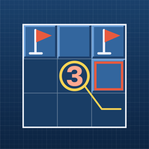

踏んだわけが分かる地雷さがし
地雷を踏んだら、そのマスが「踏む前に分かったか」を見せる、地雷さがしの推理パズルです。
マス目の下に地雷がかくれています。開けたマスの数字は、まわり8マスにある地雷の数。数字から推理して、地雷でないマスを全部開けるとクリアです。
- 踏んだわけが分かります。地雷を踏むと、踏む直前に見えていた数字だけで「踏む前に分かったか」を計算します。分かったなら、決め手の数字を黄色の丸で囲み、どう分かるかを文で見せます。まだ分からないマスだったなら、その時に確かに開けられたマスと、そのわけを見せます
- 1手もどして続けられます。踏んだあと「1手もどす」で、踏む前から続けられます
- 運のいらない盤です。どの盤も、最初の1マスのあとは推理だけで最後まで解けると、作るときに計算で確かめます
- つまったら、理由つきのヒント。旗の位置がまちがっているときも知らせます
- 初級 9×9・中級 16×16・上級 16×30・自分で決める盤。閉じても続きから遊べます。旗は「道具のボタンで切り替え」か「長く押して旗」を選べます
- 登録・課金・通知はありません。記録はこの端末の中だけに保存します。画面のいちばん下に小さな広告が出ます（1回ごとに広告をはさまず、画面いっぱいの広告・動画の広告は出しません）